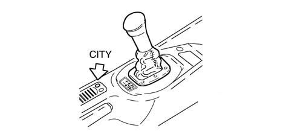
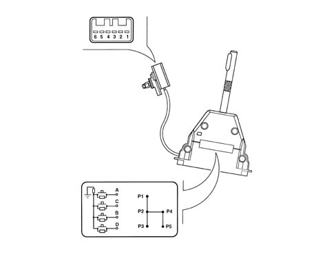
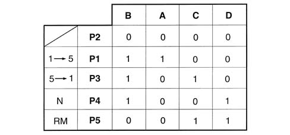
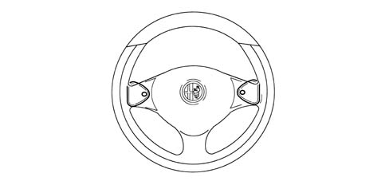
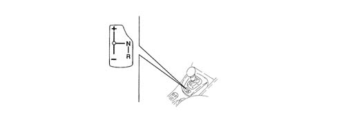
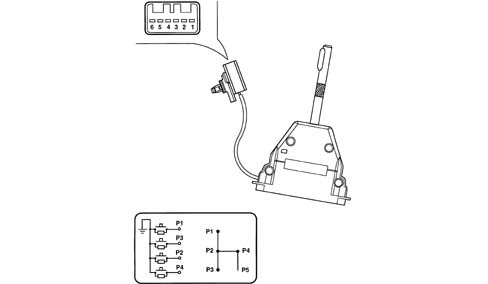
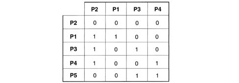

2127A hydraulic transmission external linkage
- Path
- Descriptions > 21 GEARBOX > 2127 ELECTRO-HYDRAULIC SELECTION. GEARBOX EXTERNAL. CONTROLS > 2127A hydraulic transmission external linkage
- Kind
- system description
- Applies to
- engines: 2.0 TS, 3.2 V6; all production periods
- Interactive page
- https://sloeber94.github.io/elrnDB-a147/en/#/3022469
Applies to: engines: 2.0 TS; all production periods; only with equipment: Cambio robotizzato
CONSTRUCTION FEATURES
Speed selection lever
When in semiautomatic mode, gear changes are made using a floating control lever with a single stable central position (P2).
To change gear with the vehicle stationary, in addition to keeping the brake pedal pressed:
- push the lever forwards to change up a gear (P1);
- push the lever backwards to change down a gear (P3);
- push the lever to the right to engage neutral (P4);
- pushing the lever to the right and then backwards engages Reverse (P5).

The lever is equipped with four normally open switches, each with an electrical resistance in parallel to the contacts which give an earth signal when in the closed position.

1 - Earth 2 - Switch A 3 - Switch C 4 - Switch B 5 - Switch D 6 - Not connected
The various combinations for activation of switches A - B - C - D are summarised in the following table.

Steering wheel with speed selection levers.
There are two levers on the steering wheel, under the spokes, through which, when the car is moving, the driver can change up or down a gear.
The left lever (-) changes down a gear, whilst the right lever (+) changes up a gear.
For more details [4110A steering control].

Applies to: engines: 3.2 V6; all production periods; only with equipment: Cambio robotizzato
COMPONENT DESCRIPTION
GEAR SELECTION CONTROL LEVER
When in semiautomatic mode, gear changes are made using a floating control lever with a single stable central position.
To change gear, hold the brake pedal down and:
- push the lever forward (+) to change up;
- push the lever back (-) to change down.
To engage neutral (N), move the gear lever to the right with the car at a standstill and the brake pedal pressed.
Reverse (R) can be engaged from any speed and with the car at a standstill by pushing the lever to the right and back.

It is equipped with four normally open switches, each with two electrical resistances. One resistance is in parallel with the contact and the other is earthed.

The various combinations for activation of switches P1-P2-P3-P4 are summarised in the following table.

STEERING WHEEL WITH SPEED SELECTION LEVERS
There are two levers on the steering wheel, under the spokes, through which, when the car is moving, the driver can change up or down a gear.
Use the left hand button (-) to change down and the right hand button (+) to change up.